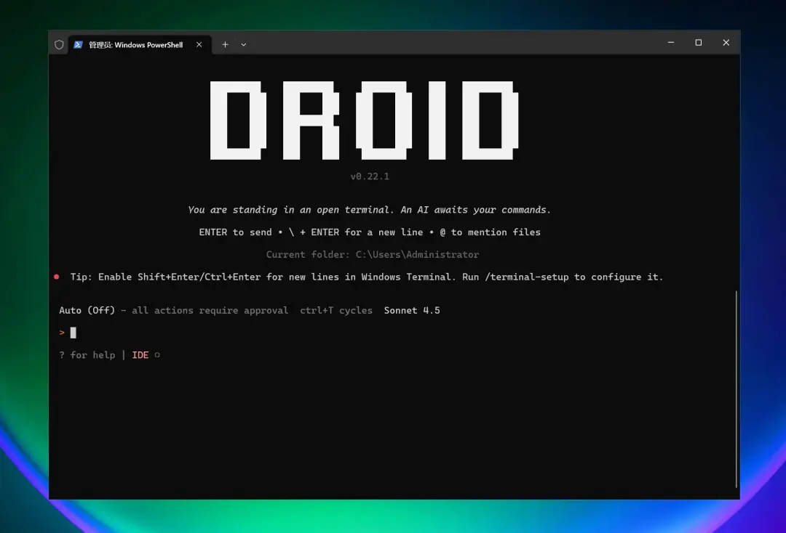
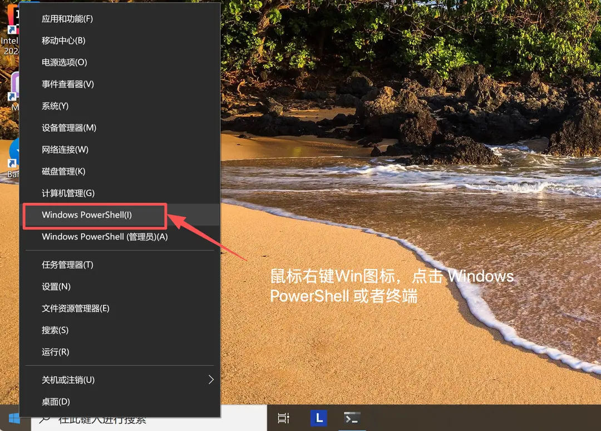
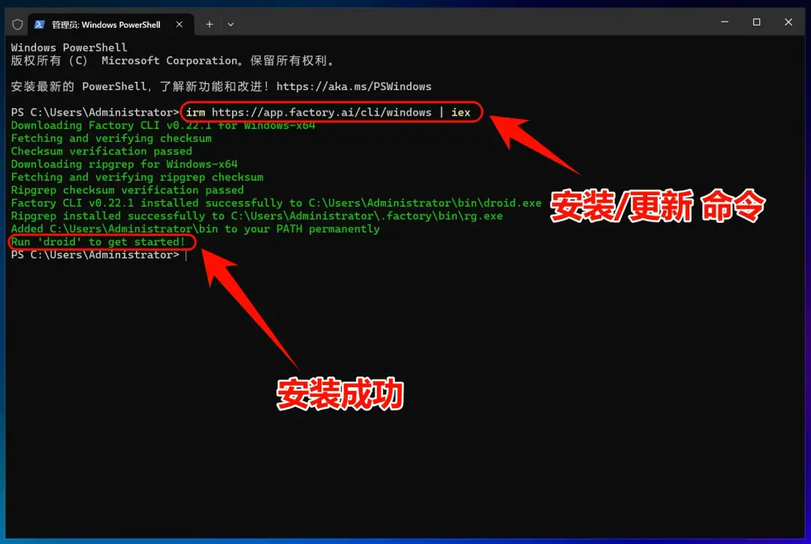
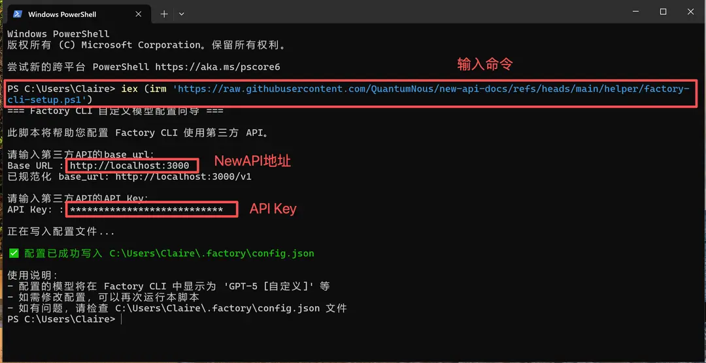
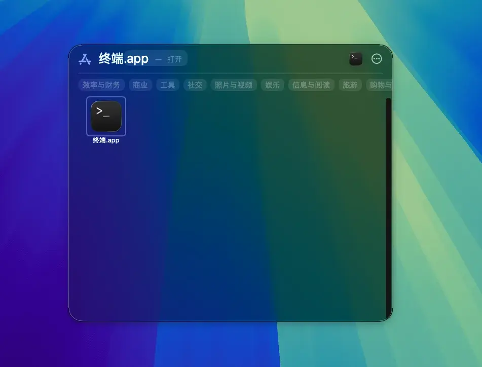
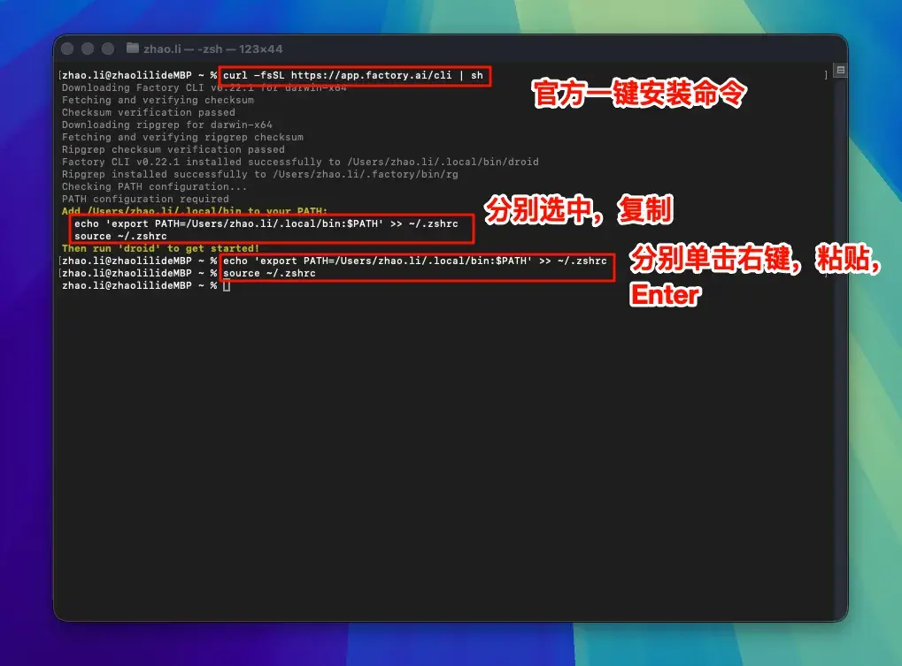
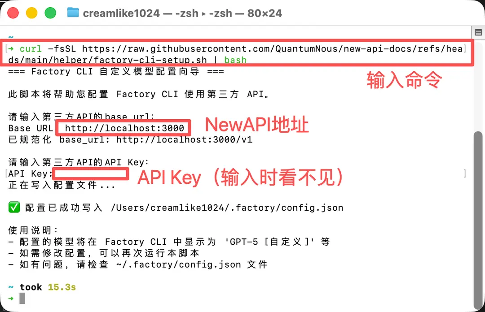

编程
Factory Droid CLI 接入教程
完整复刻源站 Droid CLI 教程密度：效果演示、特性、Windows/macOS/Linux 安装配置、启动示例。
Droid工程代理CLI
项目介绍
Droid CLI 是由 Factory AI 开发的命令行工具，旨在作为 AI 软件工程代理运行。它允许用户通过终端与各种大型语言模型交互，构建、调试和重构代码，甚至创建完整的应用程序。
效果演示

特性
| 类别 | 特性 | 价值/能力 | 示例/备注 |
|---|---|---|---|
| 快速上手与 CLI | 30 秒安装；在项目目录中启动 droid 交互会话；支持 macOS/Linux 与 Windows | 快速接入当前工程，无需新工具 | Windows 安装：irm https://app.factory.ai/cli/windows | iex；启动：droid |
| 端到端特性开发 | 从规划到实现到测试的全流程自动化；透明的评审流程 | 提升交付速度，保持人类把控 | 原生 diff 查看与批准流程（见"透明与可控"） |
| 代码库深度理解 | 融合组织在代码库、文档、Issue 追踪中的共享知识；上下文感知，效果随时间提升 | 更准确的建议与改动 | 持续利用跨仓库与文档的知识 |
| 工程系统集成 | 原生集成 Jira、Notion、Slack 等工具；开发工作与团队流程保持同步 | 减少工具切换与信息孤岛 | "等"表示还有更多集成 |
| 生产级自动化 | 工作流可在本地与 CI/CD 复用；企业级安全与合规内建 | 一致性与可审计性 | 适配流水线与企业环境 |
| 企业级能力 | 私有部署选项、SOC-2 合规、空气隔离（air-gapped）环境 | 满足安全与合规要求 | 以安全与质量优先 |
| 现有工具增强 | 在终端、IDE 与既有开发环境中工作；无需切换编辑器或学习新界面 | 保持现有工作习惯、低迁移成本 | 与熟悉工具深度集成 |
| 透明与可控 | 每个决策可见且可审阅；对代码变更保持完全监督；原生 diff 查看与审批工作流 | 降低风险、提升可控性 | 审核友好、可追踪 |
| 模型灵活性 | 不锁定单一 AI 提供商；按任务选择最佳模型；组织级一致行为与记忆 | 在性能与成本间做最优选择 | 支持多模型路由 |
| 下一步与资源 | Quickstart、Common Use Cases、IDE Integration、Configuration、AGENTS.md | 便于落地与实践 | 见页面 "Next steps/Additional resources" |
AI 模型配置方法
Windows 端图文指引
1.打开终端

2.安装 Factory Droid CLI
官方一键安装命令：
一键安装命令
irm https://app.factory.ai/cli/windows | iex
3.修改配置文件
Droid CLI 使用第三方 API 需要修改配置文件。

修改环境变量
iex (irm 'https://raw.githubusercontent.com/QuantumNous/new-api-docs/refs/heads/main/helper/factory-cli-setup.ps1')设置API地址和KEY秘钥
将base_url设置为：https://ciyuan.fast API KEY秘钥设置成你在词元.fast 控制台创建的令牌
4.开始使用 Droid CLI
现在你可以开始使用 Droid CLI 了！
启动 Droid CLI
直接启动 Droid CLI：
droid在特定项目中使用：
# 进入你的项目目录
cd C:path oyourproject
# 启动 Droid CLI
droid按 Enter 启动 Droid CLI。
Droid CLI 要求用户登录官方账号（免费）后才能使用。
5.Windows 常见问题解决
安装时提示 permission denied 错误
这通常是权限问题，尝试以下解决方法：
- 以管理员身份运行 PowerShell
- 或者配置
npm使用用户目录：npm config set prefix %APPDATA% pm
PowerShell 执行策略错误
如果遇到执行策略限制，运行：
Set-ExecutionPolicy -ExecutionPolicy RemoteSigned -Scope CurrentUsermacOS/Linux 端图文指引
1.安装 Droid CLI
安装 Droid CLI
打开终端，运行以下命令：
curl -fsSL https://app.factory.ai/cli | sh

按照安装提示修改环境变量（直接复制安装提示代码）：
Linux 视情况选择 ~/.bashrc 或 ~/.zshrc
Droid CLI 环境变量 (仅作示例)
echo 'export PATH=/Users/修改此处/.local/bin:$PATH' >> ~/.zshrc
source ~/.zshrc2.修改配置文件
Droid CLI 使用第三方 API 需要修改配置文件。
一键修改配置文件
curl -fsSL https://raw.githubusercontent.com/QuantumNous/new-api-docs/refs/heads/main/helper/factory-cli-setup.sh | bash
设置API地址和KEY秘钥
将base_url设置为：https://ciyuan.fast API KEY秘钥设置成你在词元.fast 控制台创建的令牌
3.开始使用 Droid CLI
现在你可以开始使用 Droid CLI 了！
启动 Droid CLI
直接启动 Droid CLI：
droid在特定项目中使用：
# 进入你的项目目录
cd /path/to/your/project
# 启动 Droid CLI
droid按 Enter 启动 Droid CLI。
Droid CLI 要求用户登录官方账号（免费）后才能使用。